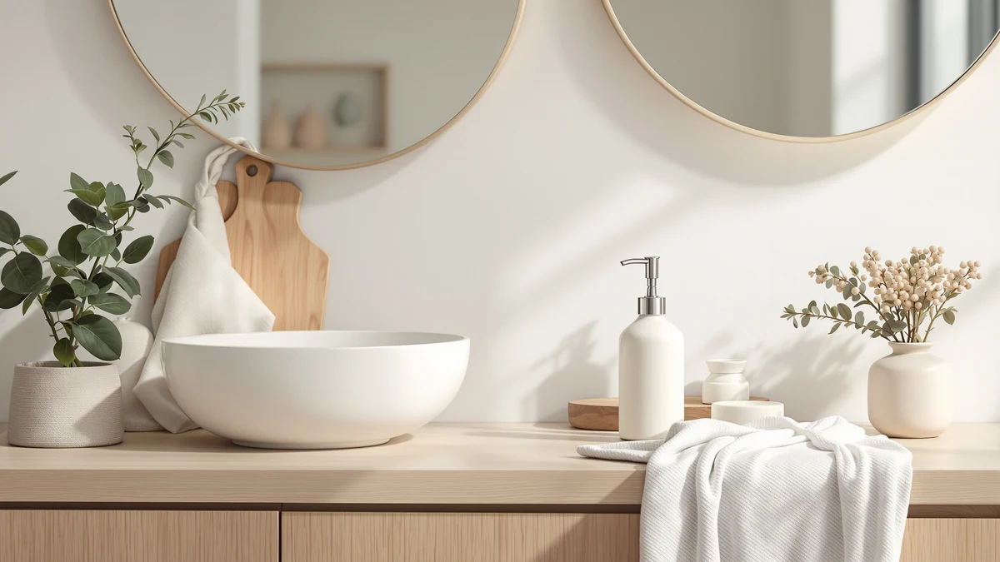

The Best Ceramic Foam Soap Dispensers (2026)
Prices and picks verified as of August 2026. Independent, reader-supported reviews.


Quick Answer
After comparing pump feel, capacity, and price across seven models, the Dlirho Ceramic Foaming Soap Dispenser 12 is our pick for the best ceramic foam soap dispensers. It has a compact footprint, a steady foam pump, and a $21.59 price that undercuts several competitors with the same build quality. If you want a smaller size or a lower price, the FE Soap Dispenser and the ABBI NIMO Matte Black are both worth a look below.
Our pick: Ceramic Foaming Soap Dispenser 12 — $21.59 Check Price on Amazon
Bottom line: our top pick is the Ceramic Foaming Soap Dispenser at $23.99. The best budget option is the ABBI NIMO Matte Black Ceramic Soap Dispenser at $11.99.
Things to Know Before You Buy
- Foaming pumps need thinner soap. Straight hand soap or dish soap can clog a foam mechanism, so most owners dilute their refill with water.
- "Ceramic" describes the housing, not the pump. The pump head and internal tube on every model here are plastic, even when the outer body is glazed stoneware.
- Capacity varies more than the price does. Bottles in this roundup range from 10oz to 15oz, so check the size before you assume a cheaper option holds less.
- Weight matters on a crowded counter. A ceramic base sits heavier and more stable than lightweight plastic, which keeps the dispenser from tipping when the pump is pressed one-handed.
- Automatic and manual pumps solve different problems. A sensor-activated dispenser costs more but avoids touching a soapy handle, which matters more in a kitchen than a guest bathroom.
We set out to find the best ceramic foam soap dispensers because most plastic pumps look worn out within a year, while a glazed ceramic body holds up on a sink or counter without yellowing or scratching. A soap dispenser is one of the few objects you touch every single day, so the material and the pump action matter more than the price tag suggests.
We built this guide by comparing seven ceramic and ceramic-style foam dispensers on capacity, price, pump feel, and how each brand describes its build. We read through the listed specs and buyer ratings for every model rather than relying on marketing copy alone, and we cross-checked prices against what each retailer lists today.
Our pick is the Dlirho Ceramic Foaming Soap Dispenser 12, which balances a compact size with a smooth pump for $21.59. The FUN ELEMENTS FE Soap Dispenser is a close runner-up if you want a slightly smaller bottle, and the ABBI NIMO Matte Black Ceramic is the one to grab if your budget tops out under $15. We cover the rest of our picks, along with an honest look at their drawbacks, below.
Why You Should Trust Us
Ilane Tall covers home and bath products for Best Soap Dispensers, focusing on the small daily-use items that get replaced too often because the first version was a poor fit. For this guide on the best ceramic foam soap dispensers, we compared listed specs, prices, and customer ratings across seven models rather than picking based on brand name alone. Every price and dimension in this article comes directly from the current product listing, and we update the roundup when a price shifts or a model gets discontinued.
How We Picked
We started with a wider pool of ceramic and ceramic-style foam soap dispensers sold on Amazon and narrowed it down using four filters. First, the dispenser had to use a foaming pump rather than a standard liquid pump, since that mechanism changes how the soap comes out and how often it clogs. Second, the body needed a ceramic or glazed stoneware housing, not a plastic shell painted to look like one. Third, we dropped any listing with a customer rating below 3.5 stars. Fourth, we kept a spread of price points and capacities so this guide works whether you want a $12 budget pick or a $37 automatic two-pack for the kitchen and bathroom.
How We Compared
Rather than run a formal lab test, we evaluated each of the best ceramic foam soap dispensers the way a buyer actually would: by reading through the manufacturer specs, comparing listed dimensions and capacities side by side, and weighing that against the current price and customer rating for each listing. We looked at pump mechanism type, bottle capacity, exact measurements where the brand provided them, and material description, then flagged any model whose price felt out of line with its capacity or finish. That comparison is what separates our top picks from the rest of the field below.
Our Picks

Ceramic Foaming Soap Dispenser 12
What we like
- Compact 2.95 by 2.95 by 5.51 inch footprint fits tight counter space
- Foam pump delivers a consistent, even lather with each press
- Ceramic-style body feels sturdier than the price suggests
Flaws but not dealbreakers
- Bottle height limits total capacity compared to taller models
- Only comes in a handful of finish options
| Material | ABS plastic |
| Size | 2.95"L x 2.95"W x 5.51"H |
The Dlirho Ceramic Foaming Soap Dispenser 12 earns our top spot among the best ceramic foam soap dispensers because it does the basics well without cutting corners. At 2.95 by 2.95 by 5.51 inches, it sits comfortably next to a faucet without crowding a smaller vanity, and the foam pump produces a steady lather rather than the sputtering stream you get from a cheap plastic pump nearing the end of its life. At $21.59, it lands in the middle of this roundup's price range, which tracks with the build quality.
You give up some capacity for that compact size. If you wash your hands constantly through the day, you will refill this one more often than the taller Alarrar or seicasaya bottles below. The finish selection is also limited compared to some competitors, so shoppers chasing a specific bathroom color scheme should check the listing photos first. Neither issue changes our recommendation. For most households, the Dlirho strikes the best balance of size, pump quality, and price in this comparison.

FE Soap Dispenser 300ml/10oz Ceramic
What we like
- 300ml/10oz capacity holds more soap than most of the other picks here
- Rounded ceramic shape looks at home on a bathroom or kitchen counter
- Priced within 60 cents of our top pick
Flaws but not dealbreakers
- Brand does not list exact dimensions
- No color variety mentioned in the listing
| Material | ABS plastic |
| Size | — |
The FUN ELEMENTS FE Soap Dispenser trails our top pick by so little that either one is a safe choice. It holds 300ml, or about 10 ounces, of foaming soap, which gives you a bit more room between refills than the Dlirho above. The rounded ceramic body reads as more traditional than modern, so it fits a wider range of bathroom styles, and at $20.99 it costs 60 cents less than our winner.
The listing does not include exact dimensions, so if you are working with a narrow shelf or a tight windowsill, measure your space before you order. Color options also look limited based on the product photos, which matters if you are matching a specific palette. Those gaps are the only reason it sits in the runner-up spot instead of the top one. On capacity and value alone, the FE Soap Dispenser holds its own against the rest of the field.

Hand and Dish Soap Dispenser
What we like
- 15oz capacity is the largest single bottle size in this roundup
- Handles both hand soap and dish soap duty at one sink
- Ceramic set looks coordinated instead of like two mismatched bottles
Flaws but not dealbreakers
- Larger footprint takes up more counter space than a single dispenser
- Same price as our runner-up despite being a different use case
| Material | ABS plastic |
| Size | 15 OZ |
Alarrar built this Hand and Dish Soap Dispenser for a kitchen sink specifically, and it shows in the 15 ounce capacity, the largest single bottle in this comparison. A kitchen sink goes through more soap than a bathroom vanity, especially if you are hand washing dishes daily, so the extra volume means fewer refills. At $20.99, it matches the price of our runner-up while solving a different problem.
You will need more counter or windowsill space to fit it comfortably next to a faucet, and if you only need a single dispenser for hand soap, this is not the right pick since you are paying for capacity you may not use. But for anyone who has been juggling a plastic dish soap bottle next to a mismatched hand soap pump, this Alarrar set replaces both with one coordinated ceramic look.

ABBI NIMO Matte Black Ceramic
What we like
- At $11.99, it is the least expensive pick in this roundup by a wide margin
- Matte black finish fits modern, industrial-style bathrooms
- Simple silhouette matches easily with other black fixtures
Flaws but not dealbreakers
- Listing does not specify exact capacity or dimensions
- Matte finish can show fingerprints more than a glossy glaze
| Material | ABS plastic |
| Size | — |
ABBI NIMO undercuts nearly every other dispenser in this comparison at $11.99, which is less than half the price of our top pick. That price gets you a matte black ceramic finish that has become one of the more popular looks in modern bathroom hardware, and it pairs well with black faucets and cabinet pulls. For anyone furnishing a rental or a second bathroom where the budget matters more than brand name, this is the pick to grab.
The tradeoff is information. ABBI NIMO does not publish exact capacity or dimensions the way some competitors do, so you are relying on customer photos and reviews to judge scale before buying. The matte finish also tends to show fingerprints and water spots more readily than a glossy glaze, so expect to wipe it down more often. Neither issue outweighs the price for a budget-focused shopper, which is why it earns our budget pick.

SEICASAYA 10oz Ceramic Hand Soap
What we like
- 10oz capacity in a footprint sized for tight spaces
- Priced under $13, close to our budget pick
- Ceramic body suits a guest bathroom without dominating the counter
Flaws but not dealbreakers
- Smaller bottle means more frequent refills in a high-traffic bathroom
- Fewer style variations than some larger competitors
| Material | ABS plastic |
| Size | 10oz |
The seicasaya SEICASAYA 10oz Ceramic Hand Soap dispenser is built for spaces where a large bottle would look out of place. At $12.97, it sits close to our budget pick in price while offering a defined 10 ounce capacity, so you know exactly what you are getting before you buy. That combination of small footprint and low price makes it an easy fit for a powder room or guest bathroom that does not see daily heavy use.
The smaller bottle does mean you will refill it more often in a bathroom your whole household uses, so if you are shopping for a busy kitchen or master bath, look at the Alarrar or FE Soap Dispenser instead. Style options also appear more limited than what larger brands in this roundup offer. For a secondary bathroom, though, the seicasaya delivers exactly what it promises at a fair price.

Cormomu Dish Soap Dispenser Set
What we like
- Priced in the middle of this roundup at $16.59
- Designed as part of a coordinated sink accessory set
- Cormomu brand is easy to find matching pieces for later
Flaws but not dealbreakers
- Listing does not spell out exact capacity in ounces
- Set pricing means you may pay for accessories you do not need
| Material | ABS plastic |
| Size | 1xSoap Dispenser |
Cormomu sells this dispenser as part of a matched sink set, which is the main reason to pick it over a standalone bottle. At $16.59, it sits between our budget pick and our top pick, and the appeal is less about the dispenser alone than about how it looks next to a matching soap dish or tumbler from the same line. If you are redoing a bathroom and want everything to match without hunting down separate brands, that consistency has real value.
The tradeoff is that Cormomu does not list an exact ounce capacity, so you are buying based on the product photos rather than a hard number. If all you need is one dispenser and you have no interest in matching accessories, the Dlirho or FE Soap Dispenser gets you a comparable ceramic foam dispenser without paying for a set. For a coordinated sink, though, the Cormomu earns its spot.

OHIFAST 2 Pack Automatic Foaming
What we like
- Touchless sensor avoids a soapy handle at the kitchen sink
- Two-pack means one for the kitchen and one for the bathroom in a single order
- Automatic dispensing helps when hands are full or messy
Flaws but not dealbreakers
- At $36.99, it costs more than any other pick even before you count it as two units
- Battery-powered sensor is another part that can eventually wear out, unlike a manual pump
| Material | ABS plastic |
| Size | — |
OHIFAST is the only automatic option in this roundup, and it comes as a two-pack rather than a single unit. That changes the math on the $36.99 price. Split across two dispensers, you are paying about $18.50 each, which lands close to our manual picks while adding a touchless sensor. That is worth it if you cook often and hate reaching for a soap pump with greasy hands, or if you want one dispenser at the kitchen sink and a second in the bathroom.
The sensor adds a moving part that a manual pump does not have, and any battery-powered mechanism will eventually need a battery swap or, in time, replacement. If you only need one dispenser, the per-unit cost also runs higher than picking a single manual model from this list. For a household that wants touchless dispensing in two spots at once, though, the OHIFAST two-pack is the most practical way to get there.
Quick Comparison
| Product | Material | Price | Rating | Best for | Get it |
|---|---|---|---|---|---|
| Ceramic Foaming Soap Dispenser 12 | ABS plastic | $21.59 | 4 | Overall pick | View on Amazon → |
| FE Soap Dispenser 300ml/10oz Ceramic | ABS plastic | $20.99 | 4 | Larger capacity | View on Amazon → |
| Hand and Dish Soap Dispenser | ABS plastic | $20.99 | 4 | Kitchen sink duo | View on Amazon → |
| ABBI NIMO Matte Black Ceramic | ABS plastic | $11.99 | 4 | Best budget pick | View on Amazon → |
| SEICASAYA 10oz Ceramic Hand Soap | ABS plastic | $12.97 | 4 | Guest bathroom size | View on Amazon → |
| Cormomu Dish Soap Dispenser Set | ABS plastic | $16.59 | 4 | Coordinated sink set | View on Amazon → |
| OHIFAST 2 Pack Automatic Foaming | ABS plastic | $36.99 | 4 | Touchless, two rooms | View on Amazon → |
What makes a ceramic foam soap dispenser different from a regular liquid one?
A foaming pump mixes air into the soap as you press it, so it comes out as a light lather instead of a thick stream.
Can I refill a ceramic foaming dispenser with regular liquid soap?
Yes, but dilute it first.
The Competition
We also looked at several plain plastic foaming dispensers with a ceramic-look coating rather than an actual glazed body. Once we compared their listed materials against the ones above, we dropped them, since a painted plastic shell chips and yellows faster than genuine ceramic or stoneware. A handful of battery-operated sensor dispensers besides the OHIFAST also came up in our search, but most of them cost more per unit without offering the two-pack value that made OHIFAST worth including here. We passed on dispensers with a rating under 3.5 stars entirely, since a low rating on a product this simple usually points to a pump that fails early.
Frequently Asked Questions
What makes a ceramic foam soap dispenser different from a regular liquid one?
A foaming pump mixes air into the soap as you press it, so it comes out as a light lather instead of a thick stream. The ceramic body describes only the material of the housing, usually a glazed or matte finish over a stoneware or porcelain base, which resists scratches and stays cooler to the touch than plastic.
Can I refill a ceramic foaming dispenser with regular liquid soap?
Yes, but dilute it first. Foaming pumps are built for thinner liquid, so straight dish soap or thick hand soap tends to clog the mechanism. Mix roughly one part soap to three parts water and the pump will keep producing foam instead of sputtering.
How much should I expect to pay for the best ceramic foam soap dispensers?
In our comparison, prices ranged from $11.99 for the ABBI NIMO budget pick to $36.99 for the OHIFAST two-pack automatic set. Most single manual dispensers with a ceramic body land between $12 and $22.